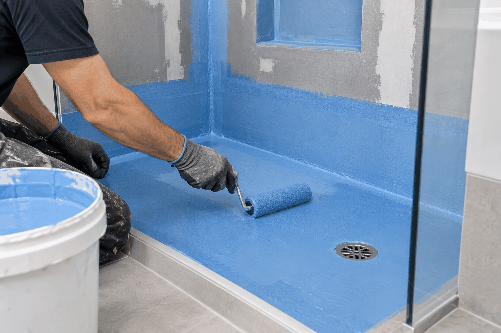

Waterproofing Adelaide
Waterproofing starts before the finish goes on.
Waterproofing is a key consideration in bathrooms, laundries and wet areas where moisture management matters.

Plan the project in the right order
Discuss the space, existing surfaces and the stage of your project before tiling or other finishes are installed.
Talk to Ellis
Call Ellis Services Group to discuss waterproofing in Adelaide.
CALL 0425 170 688